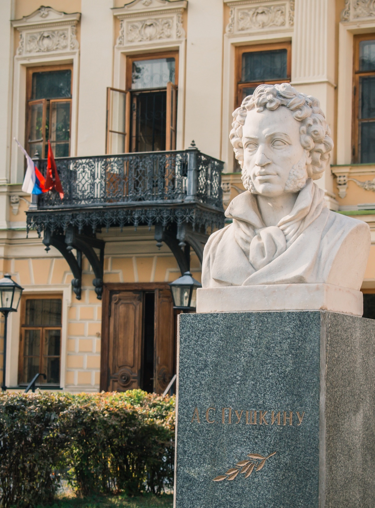
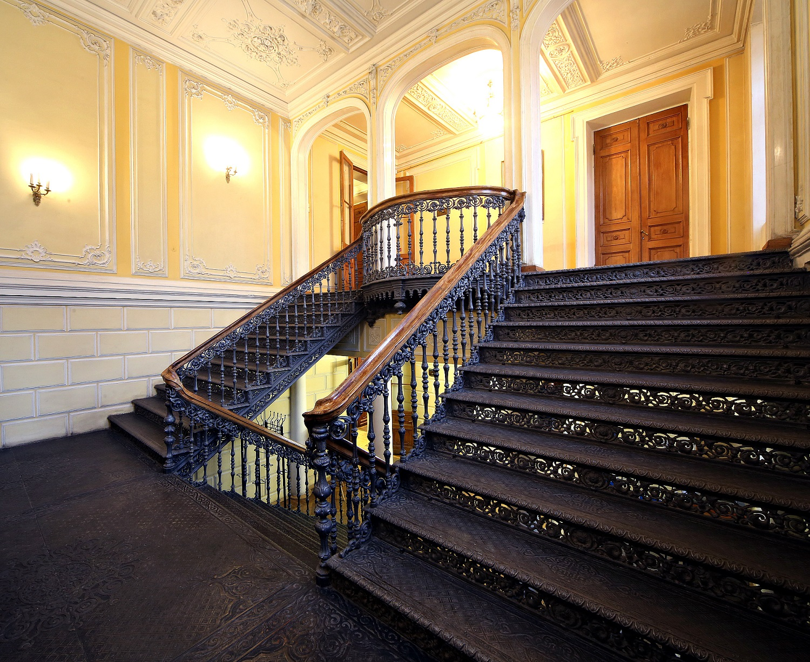
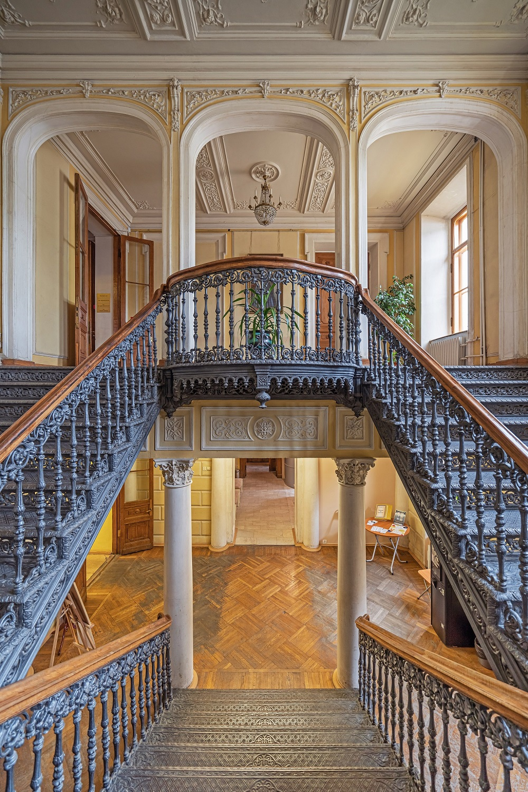

У каждой книги —
своя история.
Найдите вашу.
Пушкинская читальня: встречаемся в историческом особняке, открываем новые книги и читаем онлайн.
Открыть весь каталогЧто почитать сегодня
«Я памятник себе воздвиг нерукотворный…» — А. С. Пушкин, 1836
Новые поступления

Знакомые строки.
Новые открытия.
Зайдите в Пушкинскую читальню — за любимой классикой, тишиной исторических залов и вдохновением для своих историй.
Заглянуть в библиотеку ↗Фотографии из официальной галереи библиотекиАфиша мероприятий
Адрес и часы работы
Новости библиотеки
Каталог
Личный кабинет читателя
Афиша и клубы
Режим администратора
Список читателей и их бронирований. Данные хранятся в этом браузере.
О библиотеке
Библиотека-читальня имени А. С. Пушкина
Одна из старейших публичных библиотек Москвы. Основана в 1899 году, в столетие со дня рождения Александра Сергеевича Пушкина. Первоначально читальня располагалась на Немецкой улице, нынешней Бауманской.
Сегодня библиотека работает на Спартаковской улице, 9, в особняке Мамонтовых — Мухиных. Здесь собраны более 150 тысяч изданий: прижизненные публикации Пушкина и его современников, классика, современная проза, научно-популярные книги и детская литература. Читальный зал, абонемент, коворкинг и клубы открыты для горожан. Условия записи уточняйте на официальном сайте.
История здания
От купеческого дома до читальни
1 ноября 1911 года городские власти приобрели владение наследников купца Мухина на Елоховской площади, ныне Спартаковская улица, 9. Сумма сделки составила 180 тысяч рублей, а здание предназначалось «для нужд городских просветительных учреждений имени А. С. Пушкина».
С 1912 года библиотека-читальня занимает особняк Мамонтовых — Мухиных и работает в нём до сих пор.
Пушкинка в цифрах
Библиотека работает более 125 лет.
Фонд насчитывает около 150 тысяч изданий, в том числе прижизненные.
В штате около 40 сотрудников.
Здесь регулярно проходят лекции, творческие встречи, выставки и просветительские мероприятия.
Фотографии


Источник фотографий: официальная галерея библиотеки. Фотография лестницы: A. Savin (asv2019), источник указан в галерее.
Годы и события
Военные годы
Библиотека не закрывалась и в годы Великой Отечественной войны. Сотрудники читали газеты и журналы раненым в госпиталях, проводили беседы и выставки.
Нотно-музыкальный отдел
В 1930-х годах в библиотеке открылся нотно-музыкальный отдел, который работает и сегодня.
«Новые адреса счастья»
Читальня стала одной из площадок городской программы «Новые адреса счастья» и принимает горожан на культурных и просветительских мероприятиях.
Мультимедийный центр
В 2024 году библиотека стала мультимедийным центром Всероссийского музея А. С. Пушкина. Здесь появились оцифрованные портреты членов семьи поэта, рисунки и фотографии его детей, доступ к научно-популярным фильмам и изданиям музея.
Что мы предлагаем
Абонемент
Книги на дом на 14 дней, продление онлайн в личном кабинете.
Читальный зал и редкий фонд
Прижизненные издания и редкие книги выдаются для работы в читальном зале под присмотром сотрудников.
Коворкинг
Рабочие места с розетками и Wi-Fi, в том числе по субботам.
Клубы и мероприятия
Клуб молодого читателя, киноклуб, клуб программистов, детский час сказок Пушкина вслух. Актуальная афиша — в разделе «Афиша и клубы».
Контакты и как записаться
Контакты
ГБУК г. Москвы «Библиотека-читальня им. А. С. Пушкина»105066, г. Москва, ул. Спартаковская, д. 9Тел.: +7 (499) 267-56-73Режим работы уточняйте по телефону или на официальном сайте.Построить маршрут на Яндекс.КартахКак записаться
1. Зарегистрируйтесь в личном кабинете на сайте.2. Найдите книгу в каталоге и нажмите «Забронировать».3. Заберите её в библиотеке в течение срока брони.Контакты
Библиотека-читальня имени А. С. Пушкина
105066, Москва, улица Спартаковская, дом 9. Метро «Бауманская».
Главное здание: +7 (499) 267-56-73Абонемент: +7 (499) 261-08-48bibliotekapushkina@culture.mos.ruКогда приходить
Главное здание: вт–сб 10:00–21:00, вс 10:00–20:00.
Абонемент: вт–сб 10:00–22:00, вс 10:00–20:00.
Понедельник — выходной. Последний вторник месяца — санитарный день.
Как пользоваться библиотекой
01. Выберите книгу
Откройте каталог, введите название или автора. Уточните жанр и год. Нажмите на обложку, чтобы прочитать аннотацию.
Перейти в каталог →02. Забронируйте
Зарегистрируйтесь в личном кабинете и нажмите «Забронировать». В кабинете можно отменить бронь, вернуть книгу и один раз продлить срок на 7 дней.
Открыть личный кабинет →03. Читайте онлайн
У книг с доступным полным текстом есть кнопка «Читать онлайн». Настройте размер шрифта, выберите главу или страницу. Место чтения сохраняется в браузере.
04. Приходите в читальню
Для работы с редким фондом и уточнения условий записи обратитесь в библиотеку. На этом учебном сайте брони сохраняются только в вашем браузере и не передаются сотрудникам.
Адрес и контакты →